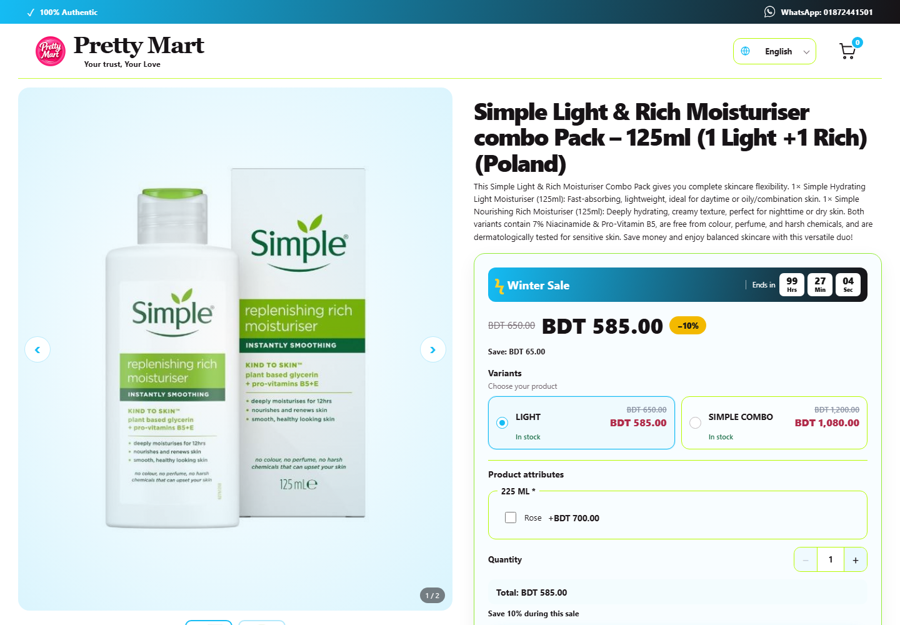
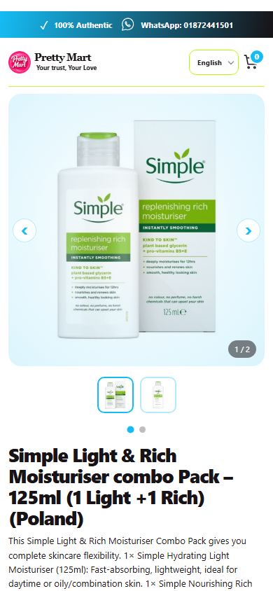
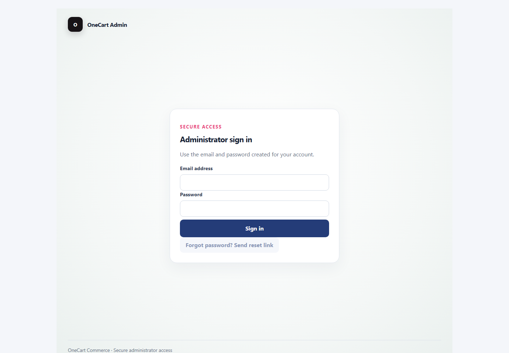
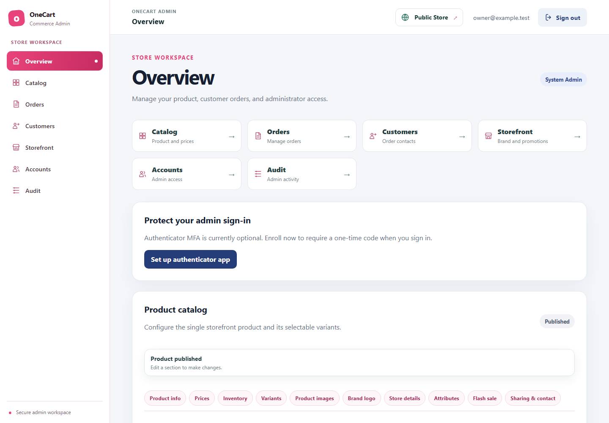
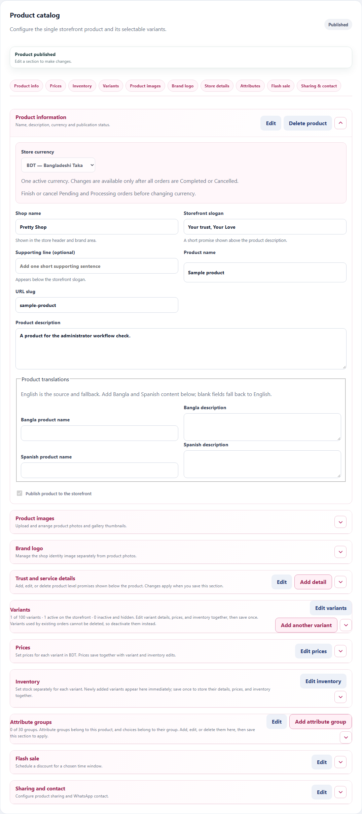
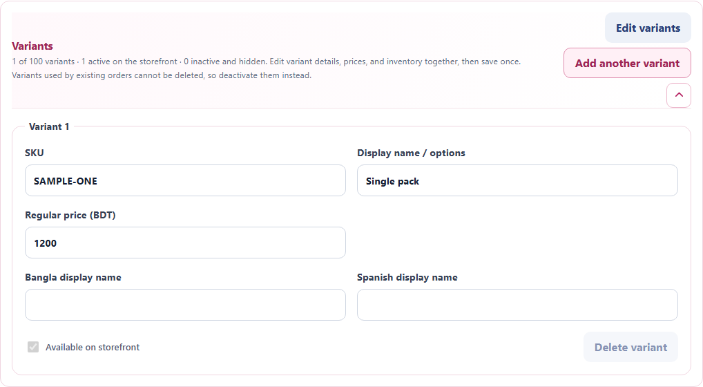
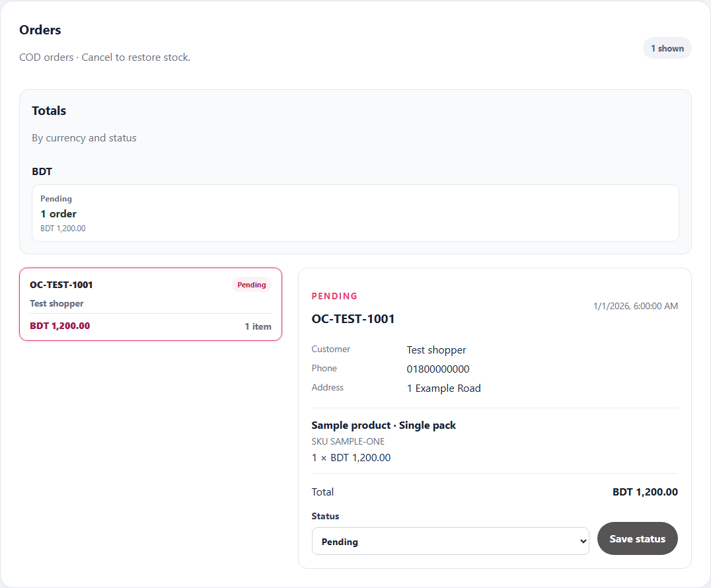
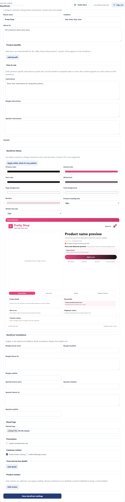
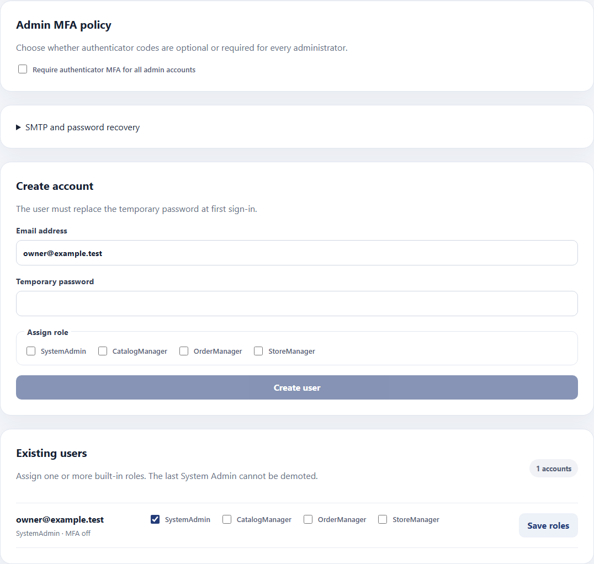

Product content, variant choices and guest shopping on your own infrastructure.
Actual application UI. Admin views use demonstration data.
The same product journey adapts to phone displays. Language selection and cart controls stay within reach.
Actual application UI. Admin views use demonstration data.
Secure API cookies and server-side authorization protect administrator access.
Actual application UI. Admin views use demonstration data.
Catalog, orders, storefront settings, accounts and audit are available according to assigned roles.
Actual application UI. Admin views use demonstration data.
Manage product information and related entries with explicit save and edit actions.
Actual application UI. Admin views use demonstration data.
Add variants, update their inventory and maintain translated labels.
Actual application UI. Admin views use demonstration data.
Review saved order values and customer-provided delivery details. Cancellation restores stock.
Actual application UI. Admin views use demonstration data.
Maintain About Us, benefits, usage text, reviews and theme selections.
Actual application UI. Admin views use demonstration data.
SystemAdmin creates team accounts, assigns responsibilities and configures the store’s SMTP relay.
Actual application UI. Admin views use demonstration data.